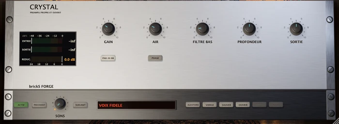

ForgePréamplis
CRYSTAL
Préampli transparent
Compris dans l’offre Forge : 14,90 € TTC, une fois. TVA non applicable, art. 293 B du CGI

Ce qu’il fait
Une bande passante large et très peu de distorsion pour garder la voix telle qu'elle est : gain, air, filtre bas continu, pré-amp propre. Le pad 20 dB est enclenché au départ : un signal de piste ou de micro n'explose pas le volume.
En bref
- Très peu de distorsion
- Air en plateau très haut
- Filtre bas continu
- Pad 20 dB enclenché par défaut
- Gamme
- Forge · Voix
- Formats
- Audio Unit, VST3
- Système
- macOS 10.15 ou plus récent, Apple Silicon et Intel